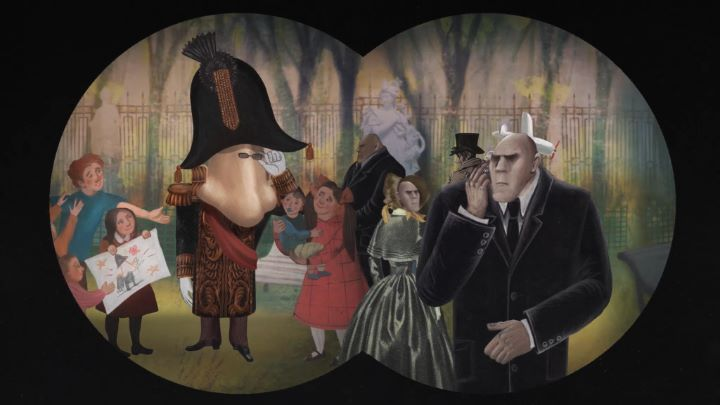

In 2020, a certain pandemic shut down the world. Many conventions and festivals, for their sake and for their fans, experimented with online-only events, at drastically reduced prices. The same was true for "Annecy," the world's largest animation film festival, held in France every Summer. They presented (most of) their 2020 selection online, all accessible with an "online pass" at about $30 USD, the price of perhaps two in-person films in normally sold-out theaters. I still hope to visit the real event one day, as a pilgrimage any animation fan should take as a tourist, but this online version is a great alternative that I hope remains.One movie I saw was the experimental Russian film "The Nose or Conspiracy of Mavericks." The film's story is loosely based on the short story "The Nose" by celebrated Ukrainian/Russian author Nikolai Gogol. More specifically, it's based on the opera based on the story, credited to composer Dmitri Shostakovich. An absurd satire, it tells the tale of a noble who wakes up one morning to discover his nose is missing, leaving him with a face "as flat as a pancake." Even more strangely, he discovers the nose has taken up a life of its own, becoming a successful Russian Statesman, despite, you know... being a giant nose in a suit. Naturally, the nose has no memory or intention of being just a nose, leaving the noble in a unusual position.The original story was a comment on social hierarchy and the madness of it all, most memorable for the sight of a giant nose in a captain's hat. The Russian opera had lovely music (if you like opera, that is), and this movie portrays most of what I assume was an old audio recording of it. But "The Nose or Conspiracy of Mavericks" is not simply an adaptation. It's a new satire, told through "three mad dreams" (in the same way that "The Nose" originally had three parts), by director Andrey (Andrei) Khrzhanovsky, an old experimental animator and documentarist. His work had a common theme of being critical of Communism and the Soviet Union (one short was even banned in the homeland in 1968), and "Conspiracy of Mavericks" continues that tradition, using a variety of 2D and paper-cutout animation styles to portray the opera, cutting in scenes of the animators working on it, and surreal scenes of it and other banned films being shown as modern in-flight entertainment. Ultimately it leads to animated scenes involving an opera-singing Joesph Stalin, praising the opera's development by Shostakovich, and using it to lead a movement to encourage "popular" art and ban "in-popular" art, becoming state censorship.  The whole thing is impressive, and darkly funny, both because of "The Nose" (which takes up more than half of the film) and for the scenes depicting Stalin (a man here who insists on not being the "pushy-type," but strangely, people keep dying of heart attacks when he tries to reach them by name over the phone). But "Conspiracy of Mavericks" is a dense movie that clearly requires a lot of background knowledge to fully appreciate it. This includes recognizing the multiple banned films referenced, knowledge of "The Nose" and its opera, and knowledge of the history of the Soviet Union in the 20th century. I don't have any of that, and am certain that I was only receiving half of what the movie was trying to give. Despite the absurd humor, the movie, told almost entirely as an opera, is about as captivating as a opera-production (and I've seen quite a number, and admit I've slept through more than a few as well). "The Nose or Conspiracy of Mavericks" is a smart, surreal, adult docu-opera, with enough variety in its animation to be worth a look for art and film students. But it's really best suited to those with pre-existing knowledge of the movie's content, in order to better understand the meaning of the satire.
- "Ani" More reviews can be found at : https://2danicritic.github.io/ Previous review: review_The_Night_Is_Short,_Walk_On_Girl Next review: review_The_Pet_Girl_of_Sakurasou